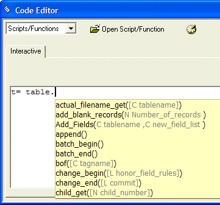
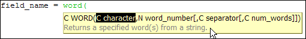
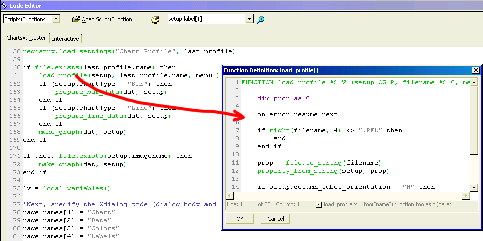

Code Editor Functions
The Alpha Anywhere Code Editor has many functions to make you more productive.
When you type in the Code Editor, the Alpha Five auto-completion logic displays a list of functions or methods starting with the characters you have typed. You can then press Enter to have Alpha Five fill in the command. The Alpha Anywhere auto-completion logic and Bubble Help make typing Xbasic commands and functions much easier because whenever a table name, field name, index name, or constant are required, you can simply right-click on the Bubble Help, and Alpha Anywhere displays a list of all of the parameters from which you can select. Also, after you have declared a variable, Alpha Anywhere shows all the variable names, making it less likely that you will introduce an error by transposing a letter while typing a variable name in a script.

When you place the insertion point in a function or method, Alpha Anywhere Bubble Help displays the syntax.

Locally defined functions are also included in the auto-completion feature. For example, if you are writing a script and you define several functions in the script, Alpha Anywhere will list all of the locally-defined functions, in addition to global functions and system functions. Alpha Anywhere also displays Bubble Help for User Defined Functions.
The Code Editor includes a Format command ( Code > Format ) and a Format button on the toolbar that formats all code. The function converts all language elements to uppercase and indents the code. For example:
|
if date = {12/25/2001} then |
Becomes:
|
IF date = {12/25/2001} then ui_msg_box("Hello", "Merry Christmas") END IF |
Selecting Code > Find Un-DIMmed Variables displays the Un Dimmed Variables dialog box. The Un DIMmed Variables list displays all the variables that are not DIMmed.
Select an entry from this list.
Optionally, click the Local, Shared, or Global radio buttons to set the scope of the variable. The default is "Local".
Optionally, click the Dim as button that corresponds to the type of the variable. The resulting code will appear in the Generated DIM Commands list.
Click Copy Commands to Clipboard.
Paste the DIM commands into your script.
The Code > In/Outdent Code > Indent Code and Code > In/Outdent Code >
Outdent Code  commands allow you to select a section
of code and insert or remove a tab. The Code > In/Outdent
Code > Left Align Code button removes all leading
tabs and moves the code to the left margin.
commands allow you to select a section
of code and insert or remove a tab. The Code > In/Outdent
Code > Left Align Code button removes all leading
tabs and moves the code to the left margin.
At any time you may select Code > Check Syntax and Alpha Anywhere will tell you the line number of the first syntax error that it finds.
Global Search of Scripts and Functions
The Edit > Global Search... command displays the Global Search of Scripts and Functions dialog box. To find text in any one of your scripts or functions:
When the Code tab is visible, select Code > Search Scripts and Functions... . Alternatively, while the Code Editor is open, click Edit > Global Search... .
Enter text to find in the Search for field or click
 to select a previous search argument. Alpha Anywhere returns
a list of scripts and the lines of code that contain the searched-for
text.
to select a previous search argument. Alpha Anywhere returns
a list of scripts and the lines of code that contain the searched-for
text.Optionally, narrow the search by selecting the Scripts or Functions radio buttons.
Optionally, narrow the search by clicking the Whole words or Match case check boxes.
Optionally, narrow the search by entering all or part of the name of a script in the Filter field.
Click Search. The Global Search of Scripts and Functions dialog box displays a list of files and lines of code that contain the search text.
Optionally, select an item from the returned list and click Quick View to see the script in a preview window. You can select and copy the code from this window.
Optionally, select an item from the returned list and click Edit Script to open the script in the Code Editor.
To clear the entire Code Editor window, click
 . To clear only the portion of the screen below the cursor
location, click . To clear only the portion above the
cursor location, click .
. To clear only the portion of the screen below the cursor
location, click . To clear only the portion above the
cursor location, click .
To comment out a block of code, select it and click Code > Comment/Un-Comment Code > Comment Out . To reverse the process and change a comment into code, select it and click Code > Comment/Un-Comment Code > Un-Comment Out .
To enable or disable line numbering when a script or function is open in the Code Editor, right click on the code window and check or clear Line Numbering.
The Code Editor provides a set of useful tools for finding and inserting critical pieces of information into your script or function.
|
Inserts |
Description |
|
Image Name |
Code > Insert Image Name displays the <span class=Screen>Insert Image</span> dialog box that allows you to select from System Images, Addin Images, Bitmap Library Images, Windows Images, and images stored in your current database. |
|
Function Name |
Code > Insert Function displays the Function Finder dialog box that allows you to search for functions by return type and description. |
|
Field Name |
Code > Insert Field Name displays the Insert Field dialog box that allows you to insert field names from any of the tables in your database. |
|
Color Name |
Code > Insert Color > By Alpha Five Name... displays the Select Color dialog box that allows you to select any of the pre-defined colors in your database. |
|
RGB Color Value |
Code > Insert Color > By RGB Value... displays the <span class=Screen>Color Picker</span> dialog box that allows you to select any pre-defined color or define a new color. |
|
Hex Color Value |
Code > Insert Color > By HEX Value... displays the <span class=Screen>Color Picker</span> dialog box that allows you to select any pre-defined color or define a new color. |
|
Formatted Keystrokes |
Code > More Genies > Insert Key Code displays the <span class=Screen>Insert Key Codes</span> dialog box that allows you to record and insert formatted keystrokes suitable for use with the SYS_SEND_KEYS() function. |
The Xbasic Editor color codes scripts. Functions and methods are shown in green, comments in blue, and constant values in light gray. Text values without a closing quote are shown in red.
When your cursor is positioned on a function call and the function is defined within the same script, you can right click Show function declaration. This opens the function in a new window.

When your cursor is positioned on a function call and the function is defined within the same script, you can right click Goto function declaration. This repositions the cursor at the beginning of the function definition.
See Also
Code Editor, Improved Code Library